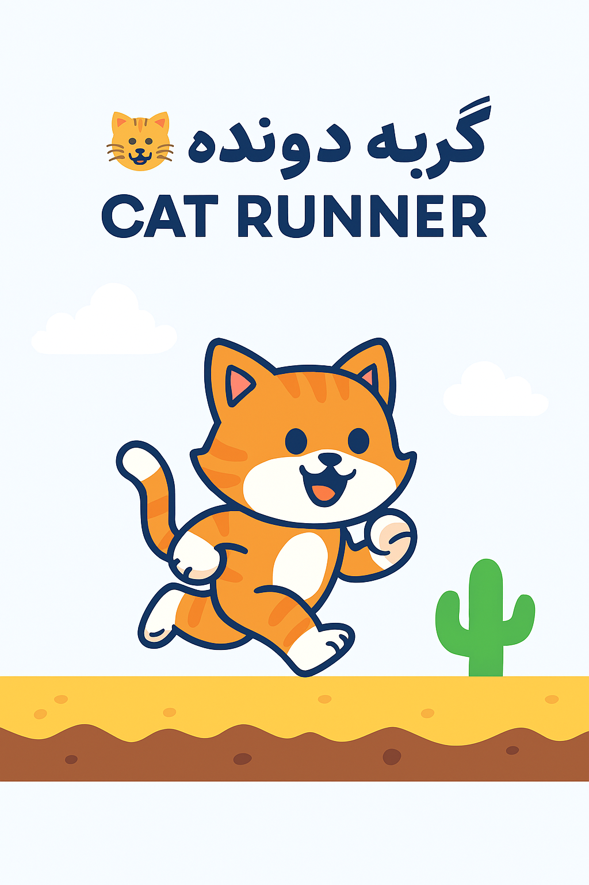

🐱 گربه دونده | Cat Runner
معلومه خیلی بیکاری 😄
یک بازی ساده و فان برای مرورگر که در اون گربه کارتونی میدوه، میپره، و از موانع رد میشه. ساختهشده با HTML، CSS و JavaScript — بدون نیاز به هیچ کتابخانه خارجی.
🎮 ویژگیها
- گربه کارتونی با انیمیشن پرش
- موانع متنوع مثل کاکتوس و سنگ
- امتیازدهی زنده و ذخیره رکورد در مرورگر
- طراحی واکنشگرا برای موبایل و دسکتاپ
- کنترل با Space یا دکمه لمسی
🛠 نحوه اجرا
- این پروژه رو کلون یا دانلود کن:
git clone https://github.com/frhadynzhadmhdy80-del/my-game.git
- فایل
index.html رو با مرورگر باز کن.
- بازی کن و رکورد بزن!
🌐 اجرای آنلاین
بازی رو اینجا اجرا کن
📦 تکنولوژیها
- HTML5
- CSS3
- JavaScript (Vanilla)
👨💻 سازنده
مهدی فرهادی نژاد
GitHub Profile
📢 مشارکت
اگه ایدهای برای ارتقا بازی داری، فورک کن و Pull Request بفرست! میتونی موارد زیر رو اضافه کنی:
- مراحل مختلف
- صداهای بیشتر
- شخصیتهای جدید
- طراحی حرفهایتر